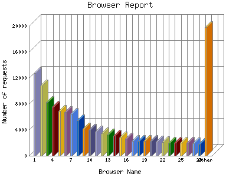

Analog 5.24
Analog 5.24 Report Magic for Analog 2.13
Report Magic for Analog 2.13The Browser Report provides a detailed breakdown of the most popular web
browsers used to visit this site. From this report it is also possible to
identify which operating system and which version of the browser the visitor
is using. For example:
Netscape Communicator 4.5, US English version
running on Windows 95 would look like:
Mozilla/4.5 [en]
(Win95; U)
MSIE 4.01 running on Windows 98 would look like:
Mozilla/4.0 (compatible; MSIE 4.01; Windows 98).
This report shows the first 40 results by number of requests. This report is sorted by number of requests.

| Browser Name | Number of requests | Percentage of the bytes | |
|---|---|---|---|
| 1. | Mozilla/4.0 (compatible; MSIE 7.0; Windows NT 6.0; SLCC1; .NET CLR 2.0.50727; Media Center PC 5.0; .NET CLR 3.0.04506) | 12,772 | 0.92% |
| 2. | Mozilla/4.0 (compatible; MSIE 6.0; Windows NT 5.1; SV1; YPC 3.2.0; .NET CLR 1.1.4322) | 10,834 | 1.30% |
| 3. | Mozilla/4.0 (compatible; MSIE 7.0; Windows NT 5.1; .NET CLR 1.1.4322; .NET CLR 2.0.50727) | 8,281 | 0.90% |
| 4. | Mozilla/4.0 (compatible;) | 7,514 | 0.100% |
| 5. | Mozilla/4.0 (compatible; MSIE 6.0; Windows NT 5.1; SV1; .NET CLR 1.1.4322) | 6,923 | 0.88% |
| 6. | Mozilla/4.0 (compatible; MSIE 7.0; Windows NT 5.1; .NET CLR 1.1.4322) | 6,686 | 0.74% |
| 7. | Mozilla/4.0 (compatible; MSIE 7.0; Windows NT 5.1) | 6,476 | 1.14% |
| 8. | Mozilla/4.0 (compatible; MSIE 7.0; Windows NT 5.1; Trident/4.0; .NET CLR 1.1.4322; WinNT-PAI 27.08.2009; .NET CLR 2.0.50727; .NET CLR 3.0.4506.2152; .NET CLR 3.5.30729) | 5,434 | 0.18% |
| 9. | Mozilla/5.0 (Windows; U; Windows NT 5.1; en-US; rv:1.9.0.6) Gecko/2009011913 Firefox/3.0.6 | 4,169 | 0.29% |
| 10. | Mozilla/4.0 (compatible; MSIE 6.0; Windows NT 5.1; SV1; .NET CLR 1.1.4322; .NET CLR 2.0.50727) | 3,964 | 0.67% |
| 11. | Mozilla/4.0 (compatible; MSIE 7.0; Windows NT 6.0; GTB5; SLCC1; .NET CLR 2.0.50727; Media Center PC 5.0; .NET CLR 3.0.04506) | 3,694 | 0.22% |
| 12. | Mozilla/4.0 (compatible; MSIE 7.0; Windows NT 5.1; Trident/4.0; .NET CLR 1.1.4322; WinNT-PAI 27.08.2009) | 3,497 | 0.39% |
| 13. | Mozilla/4.0 (compatible; MSIE 6.0; Windows NT 5.1; SV1) | 3,287 | 0.43% |
| 14. | Mozilla/4.0 (compatible; MSIE 7.0; Windows NT 6.0; SLCC1; .NET CLR 2.0.50727; .NET CLR 3.0.04506) | 3,095 | 0.20% |
| 15. | Mozilla/4.0 (compatible; MSIE 8.0; Windows NT 5.1; Trident/4.0; .NET CLR 1.1.4322; .NET CLR 2.0.50727; .NET CLR 3.0.4506.2152; .NET CLR 3.5.30729) | 2,861 | 0.62% |
| 16. | Mozilla/4.0 (compatible; MSIE 6.0; Windows NT 5.1; SV1; .NET CLR 1.1.4322; InfoPath.1; .NET CLR 2.0.50727) | 2,606 | 0.28% |
| 17. | Mozilla/4.0 (compatible; MSIE 8.0; Windows NT 5.1; Trident/4.0; .NET CLR 1.1.4322) | 2,263 | 0.30% |
| 18. | Mozilla/4.0 (compatible; MSIE 7.0; Windows NT 6.0; SLCC1; .NET CLR 2.0.50727; Media Center PC 5.0; .NET CLR 3.5.30729; .NET CLR 3.0.30618) | 2,263 | 0.41% |
| 19. | Mozilla/4.0 (compatible; MSIE 7.0; Windows NT 5.1; .NET CLR 1.1.4322; .NET CLR 2.0.50727; .NET CLR 3.0.04506.30; .NET CLR 3.0.04506.648) | 2,261 | 0.16% |
| 20. | Mozilla/5.0 (Macintosh; U; Intel Mac OS X 10_6_6; en-us) AppleWebKit/533.19.4 (KHTML, like Gecko) Version/5.0.3 Safari/533.19.4 | 2,254 | 0.61% |
| 21. | Mozilla/4.0 (compatible; MSIE 7.0; Windows NT 5.1; GTB5; .NET CLR 1.1.4322; .NET CLR 2.0.50727) | 2,172 | 0.10% |
| 22. | Mozilla/4.0 (compatible; MSIE 8.0; Windows NT 5.1; Trident/4.0; .NET CLR 2.0.50727; .NET CLR 3.0.4506.2152; .NET CLR 3.5.30729) | 2,057 | 0.38% |
| 23. | Mozilla/4.0 (compatible; MSIE 7.0; Windows NT 6.0; SLCC1; .NET CLR 2.0.50727; Media Center PC 5.0; .NET CLR 3.0.04506; InfoPath.2) | 2,013 | 0.12% |
| 24. | Mozilla/4.0 (compatible; MSIE 7.0; Windows NT 5.1; .NET CLR 2.0.50727) | 1,971 | 0.20% |
| 25. | Mozilla/4.0 (compatible; MSIE 7.0; Windows NT 5.1; .NET CLR 1.1.4322; .NET CLR 2.0.50727; .NET CLR 3.0.4506.2152; .NET CLR 3.5.30729) | 1,963 | 0.53% |
| 26. | Mozilla/4.0 (compatible; MSIE 7.0; Windows NT 6.0; FunWebProducts; SLCC1; .NET CLR 2.0.50727; Media Center PC 5.0; .NET CLR 3.0.04506) | 1,962 | 0.14% |
| 27. | Mozilla/4.0 (compatible; MSIE 7.0; Windows NT 5.1; Trident/4.0; GTB6.4; .NET CLR 1.1.4322) | 1,873 | 0.9% |
| 28. | Mozilla/4.0 (compatible; MSIE 6.0; Windows NT 5.1; SV1; GTB6; .NET CLR 1.1.4322) | 1,850 | 0.12% |
| 29. | Mozilla/4.0 (compatible; MSIE 7.0; Windows NT 5.1; .NET CLR 2.0.50727; .NET CLR 3.0.4506.2152; .NET CLR 3.5.30729) | 1,831 | 0.49% |
| 30. | Mozilla/4.0 (compatible; MSIE 7.0; Windows NT 5.1; .NET CLR 1.1.4322; .NET CLR 2.0.50727; .NET CLR 3.0.04506.30) | 1,812 | 0.11% |
| 31. | Mozilla/5.0 (compatible; MSIE 9.0; Windows NT 6.1; WOW64; Trident/5.0) | 1,726 | 0.51% |
| 32. | Mozilla/4.0 (compatible; MSIE 7.0; Windows NT 6.0; GTB5; SLCC1; .NET CLR 2.0.50727; Media Center PC 5.0; .NET CLR 3.0.04506; InfoPath.2) | 1,707 | 0.10% |
| 33. | Mozilla/4.0 (compatible; MSIE 7.0; Windows NT 6.0; WOW64; SLCC1; .NET CLR 2.0.50727; .NET CLR 3.0.04506; Media Center PC 5.0) | 1,705 | 0.11% |
| 34. | Mozilla/4.0 (compatible; MSIE 6.0; Windows NT 5.1; SV1; .NET CLR 1.1.4322; .NET CLR 2.0.50727; .NET CLR 3.0.04506.30) | 1,669 | 0.27% |
| 35. | Mozilla/4.0 (compatible; MSIE 7.0; Windows NT 5.1; .NET CLR 1.1.4322; .NET CLR 2.0.50727; .NET CLR 3.0.04506.30; .NET CLR 3.0.4506.2152; .NET CLR 3.5.30729) | 1,661 | 0.76% |
| 36. | Mozilla/4.0 (compatible; MSIE 7.0; Windows NT 6.0; FunWebProducts; SLCC1; .NET CLR 2.0.50727; .NET CLR 3.0.04506) | 1,593 | 0.11% |
| 37. | Mozilla/4.0 (compatible; MSIE 7.0; Windows NT 6.0; GTB5; SLCC1; .NET CLR 2.0.50727; .NET CLR 3.0.04506) | 1,587 | 0.10% |
| 38. | Mozilla/4.0 (compatible; MSIE 8.0; Windows NT 6.1; WOW64; Trident/4.0; GTB6.4; SLCC2; .NET CLR 2.0.50727; .NET CLR 3.5.30729; .NET CLR 3.0.30729; Media Center PC 6.0; eSobiSubscriber 2.0.4.16; .NET4.0C) | 1,512 | 0.17% |
| 39. | Mozilla/5.0 (Windows; U; Windows NT 5.1; en-US; rv:1.9.0.15) Gecko/2009101601 Firefox/3.0.15 | 1,505 | 0.42% |
| 40. | Mozilla/5.0 (Windows; U; Windows NT 6.0; en-US; rv:1.9.0.6) Gecko/2009011913 Firefox/3.0.6 | 1,501 | 0.10% |
| [not listed: 4085] | 421,140 | 83.42% | |
This report was generated on August 28, 2011 02:33.
Report time frame August 1, 2008 06:00 to August 28, 2011 04:03.
| Web statistics report produced by: | |
| Analog 5.24 | Report Magic for Analog 2.13 |